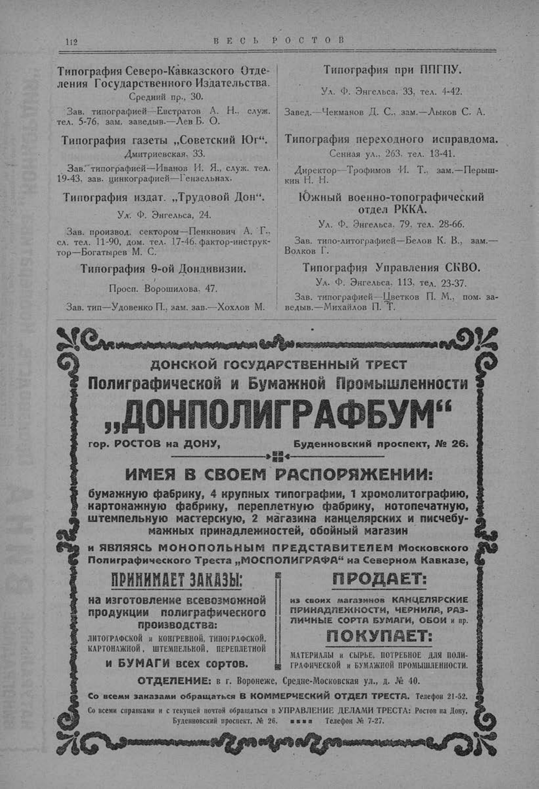

Лист источника 162
Скан

Распознанный текст
112 В Е С Ь Р О С Т О В
Типография Северо-Кавказского Отде-
ления Государственного Издательства.
Средний пр., 30.
Зав. типографией—Евстратов А. Н., служ.
тел. 5-76, зам. заведыв.—Лев Б. О.
Типография газеты „Советский Юг“.
Дмитриевская, 33.
Зав. типографией—Иванов И. Я., служ. тел.
19-43, зав. цинкографией—Гензельнах.
Типография издат. „Трудовой Дон“.
Ул. Ф. Энгельса, 24.
Зав. производ. сектором—Пенкнович А. Г.,
сл. тел. 11-90, дом. тел. 17-46, фактор-инструк-
тор—Богатырев М. С.
Типография 9-ой Дондивизии.
Просп. Ворошилова, 47.
Зав. тип—Удовенко П., зам. зав.—Хохлов М.
Типография при ППГПУ.
Ул. Ф. Энгельса, 33, тел. 4-42.
Завед.—Чекманов Д. С., зам.—Лыков С. А.
Типография переходного исправдома.
Сенная ул., 263, тел. 13-41.
Директор—Трофимов И. Т., зам.—Перыш-
кин Н. Н.
Южный военно-топографический
отдел РККА.
Ул. Ф. Энгельса, 79, тел. 28-66.
Зав. типо-литографией—Белов К. В., зам.—
Волков Г.
Типография Управления СКВО.
Ул. Ф. Энгельса, 113, тел. 23-37.
Зав. типографией—Цветков П. М., пом. за-
ведыв.—Михайлов П. Т.
ДОНСКОЙ ГОСУДАРСТВЕННЫЙ ТРЕСТ
Полиграфической и Бумажной Промышленности
„ДОНПОЛИГРАФБУМ“
гор. РОСТОВ на ДОНУ, Буденновский проспект, № 26.
ИМЕЯ В СВОЕМ РАСПОРЯЖЕНИИ:
бумажную фабрику, 4 крупных типографии, 1 хромолитографию,
картонажную фабрику, переплетную фабрику, нотопечатную,
штемпельную мастерскую, 2 магазина канцелярских и писчебу-
мажных принадлежностей, обойный магазин
и ЯВЛЯЯСЬ МОНОПОЛЬНЫМ ПРЕДСТАВИТЕЛЕМ Московского
Полиграфического Треста „МОСПОЛИГРАФА“ на Северном Кавказе,
ПРИНИМАЕТ ЗАКАЗЫ:
на изготовление всевозможной
продукции полиграфического
производства:
ЛИТОГРАФСКОЙ и КОНГРЕВНОЙ, ТИПОГРАФСКОЙ,
КАРТОНАЖНОЙ, ШТЕМПЕЛЬНОЙ, ПЕРЕПЛЕТНОЙ
и БУМАГИ всех сортов.
ПРОДАЕТ:
из своих магазинов КАНЦЕЛЯРСКИЕ
ПРИНАДЛЕЖНОСТИ, ЧЕРНИЛА, РАЗ-
ЛИЧНЫЕ СОРТА БУМАГИ, ОБОИ и пр.
ПОКУПАЕТ:
МАТЕРИАЛЫ и СЫРЬЕ, ПОТРЕБНОЕ ДЛЯ ПОЛИ-
ГРАФИЧЕСКОЙ и БУМАЖНОЙ ПРОМЫШЛЕННОСТИ.
ОТДЕЛЕНИЕ: в г. Воронеже, Средне-Московская ул., д. № 40.
Со всеми заказами обращаться В КОММЕРЧЕСКИЙ ОТДЕЛ ТРЕСТА. Телефон 21-52.
Со всеми справками и с текущей почтой обращаться в УПРАВЛЕНИЕ ДЕЛАМИ ТРЕСТА: Ростов на Дону,
Буденновский проспект, № 26. Телефон № 7-27.